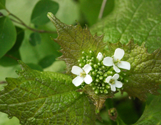

Look-zonder-look is een grote plant met tere bladeren die voorkomt aan de rand van bossen, op bermen en langs paden. Deze plant wordt weleens verward met de netel waarvan de structuur en de bladeren gelijkaardig zijn. Er zijn echter drie belangrijke verschillen met de netel: de bloemen hebben vier blaadjes aan de top van de stengel. Ook de smaak en de geur zijn danig verschillend.
Net zoals daslook heeft deze plant een verrassende looksmaak die echter iets zuurder en pikanter is. Look-zonder-look wordt voornamelijk gebruikt in salades of als decoratie in soepen en vele andere gerechten. De plant dient dus rauw en versnipperd te worden toegevoegd en zowel de bloemen als de bladeren kunnen worden gebruikt. Indien deze plant wordt gekookt, gaat de looksmaak verloren en komt de bittere smaak op de voorgrond.